Time Series Lab
Sonia Heckler, Everald Mclennon and Nick Miley
Holt-Winters Exponential Smoothing
library(tseries) #for base ts stuff## Warning: package 'tseries' was built under R version 3.3.2library(forecast) #for holtz-winters stuff## Warning: package 'forecast' was built under R version 3.3.2## Loading required package: zoo##
## Attaching package: 'zoo'## The following objects are masked from 'package:base':
##
## as.Date, as.Date.numeric## Loading required package: timeDate## Warning: package 'timeDate' was built under R version 3.3.2## This is forecast 7.3library(TTR)## Warning: package 'TTR' was built under R version 3.3.2library(stats)
PPT_mth<-read.csv("PRISM_ppt_1895-2015Mo2.csv", head=T, skip=10)
#list(PPT_mth)
str(PPT_mth) # looking at the structure of the data## 'data.frame': 876 obs. of 2 variables:
## $ Date : Factor w/ 876 levels "1895-01","1895-02",..: 1 2 3 4 5 6 7 8 9 10 ...
## $ ppt..inches.: num 2.35 0.96 0.31 0.12 1.32 0.61 5.73 3.52 1.99 1.74 ...ts(PPT_mth$ppt..inches,start=c(1895,1), frequency =12, end=c(1968)) ->pptimeseries # reading in the data in a time series format
str(pptimeseries) # looking at the structure of ppt## Time-Series [1:877] from 1895 to 1968: 2.35 0.96 0.31 0.12 1.32 0.61 5.73 3.52 1.99 1.74 ...plot.ts(pptimeseries, main="Monthly precipitation", xlab="Years", ylab= "Precipitation (inches)") # Plotting the timeseries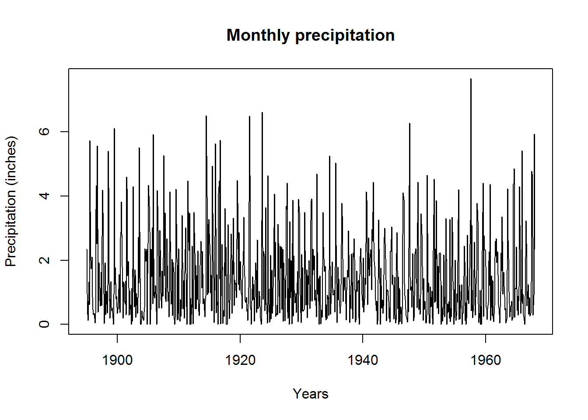
# Decomposition of the additive time series
pptimeseriescomponents<-decompose(pptimeseries)
# Plotting the trend, seasonal and irregular(random) components
plot(pptimeseriescomponents)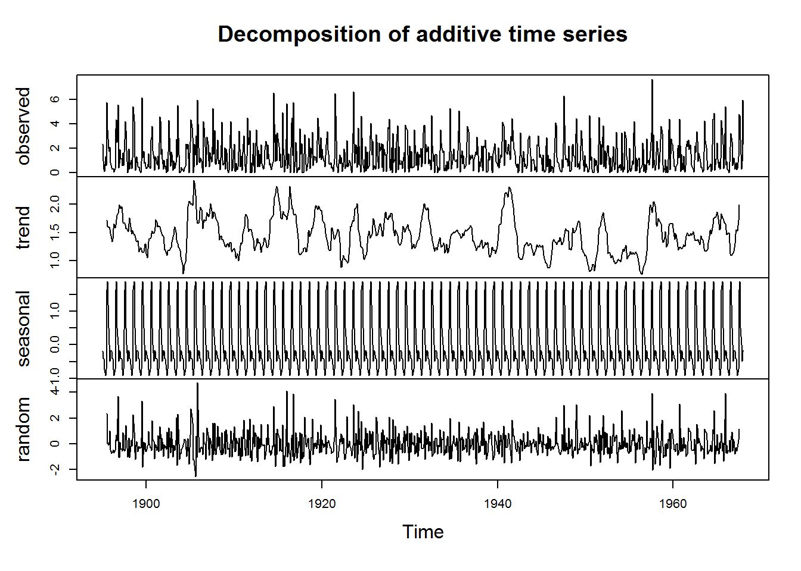
#Using HoltWinters to predict timeseries
HoltWinters(pptimeseries) -> pptimeseries2 # predicting using HoltWinters() function
plot(pptimeseries2, lwd=2) # Plotting the forecast against the original data
legend("topleft", col=c("black","red"), c("Observed", "Fitted"), lty=1,cex = 0.8)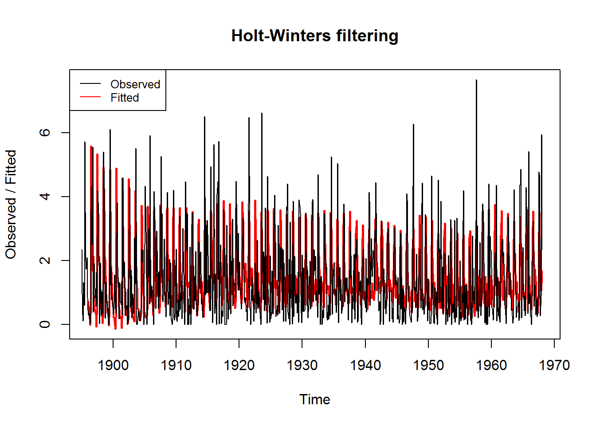
# To make foreast for furture times not included in original time series
pptimeseries3 <-forecast.HoltWinters(pptimeseries2, h=48)
plot.forecast(pptimeseries3)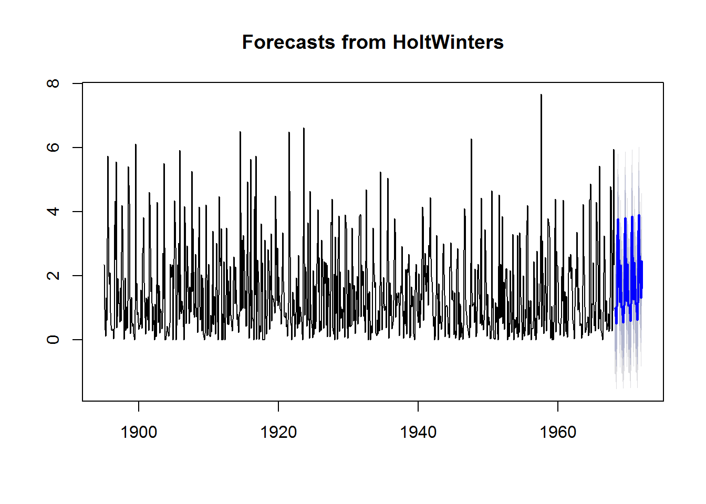
# Investigation whether the model can be improved upon
#auto-corrillation function
acf(pptimeseries3$residuals, na.action=na.pass, lag.max=20)
#The in-sample forecast errors are stored in the named element "residuals" of the list variable returned by forecast.HoltWinters().
Box.test(pptimeseries3$residuals, lag=20, type="Ljung-Box")##
## Box-Ljung test
##
## data: pptimeseries3$residuals
## X-squared = 19.883, df = 20, p-value = 0.4652# make a time plot to look at variance
plot.ts(pptimeseries3$residuals) 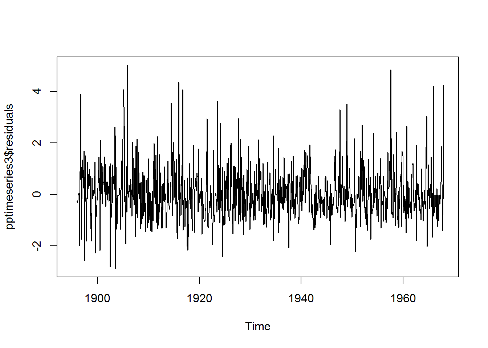
na.remove(pptimeseries3$residuals) -> PPT_S_R
# Function to check if errors are normally distributed
plotForecastErrors <- function(PPT_S_R)
{
# make a histogram of the forecast errors:
mybinsize <- IQR(PPT_S_R)/4
mysd <- sd(PPT_S_R)
mymin <- min(PPT_S_R) - mysd*5
mymax <- max(PPT_S_R) + mysd*3
# generate normally distributed data with mean 0 and standard deviation mysd
mynorm <- rnorm(10000, mean=0, sd=mysd)
mymin2 <- min(mynorm)
mymax2 <- max(mynorm)
if (mymin2 < mymin) { mymin <- mymin2 }
if (mymax2 > mymax) { mymax <- mymax2 }
# make a red histogram of the forecast errors, with the normally distributed data overlaid:
mybins <- seq(mymin, mymax, mybinsize)
hist(PPT_S_R, col="red", freq=FALSE, breaks=mybins)
# freq=FALSE ensures the area under the histogram = 1
# generate normally distributed data with mean 0 and standard deviation mysd
myhist <- hist(mynorm, plot=FALSE, breaks=mybins)
# plot the normal curve as a blue line on top of the histogram of forecast errors:
points(myhist$mids, myhist$density, type="l", col="blue", lwd=2)
}
# make a histogram
plotForecastErrors(PPT_S_R) 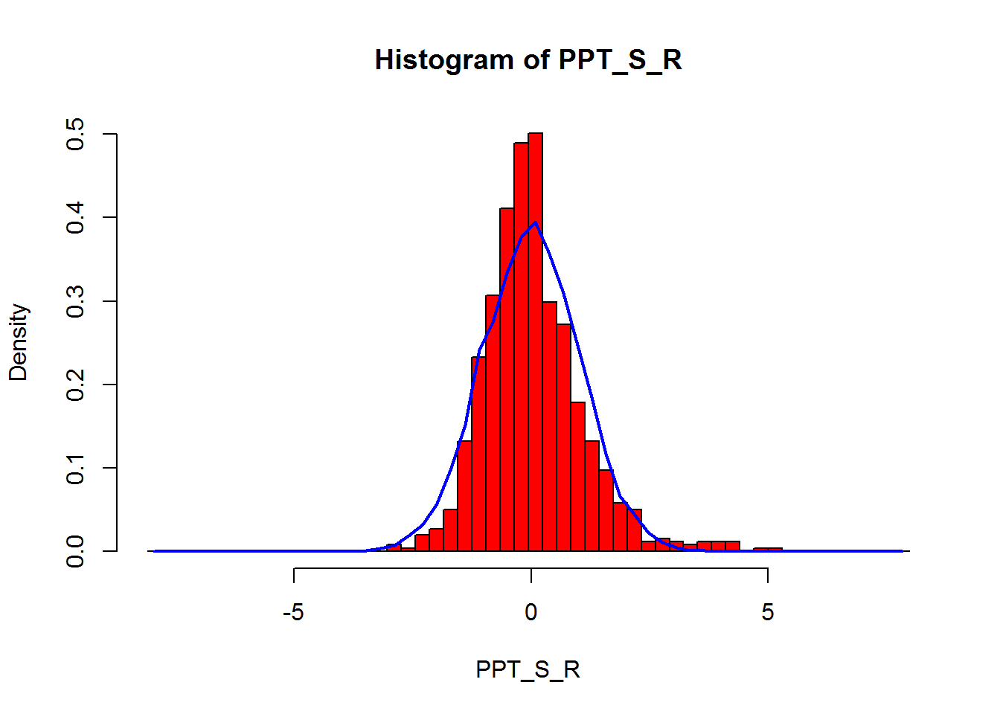
Questions
Run this code with the temperature dataset attached and pay attention to the forecast confidence intervals. Why does it perform better than it did on the precipitation dataset?
Try to run scale() or BoxCox.lambda() to transform data to non-negative forecast values.
Is Holt-Winter appropriate for forecasting with non-negative value data sets? Why or why not.
ARIMA
Two Parts
Autoregressive Model (AR): It creates a regression model using previous values from the time series. It applies a “moving window” where the response of the previous predictor data becomes the predictor data for the next group.
Moving Average (MA): A smoothing technique to reduce the effects of random variation.
(Can also have a seasonal component.)
Box-Jenkins Univariate Model
- Assumes stationarity
- NO trend, inconsistent variance and seasonality (although seasonality can sometimes be included)
- Very flexible
- Building a good ARIMA requires statistical experience (be dangerous?)
Terms in the Model
- Difference operators
- Autoregressive terms
- Moving Average Terms
- Seasonal Difference operators
- Seasonal Autoregressive terms
- Seasonal Moving Average
*As with all models, only include the necessary terms
Building an ARIMA with the Keeling curve
data(co2)
str(co2)## Time-Series [1:468] from 1959 to 1998: 315 316 316 318 318 ...plot(co2)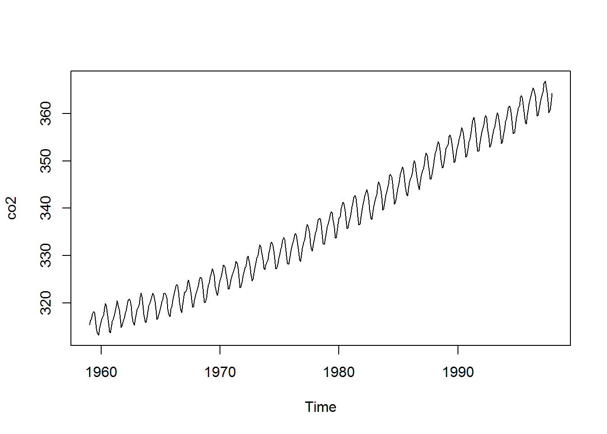
Trend?
Autocorrelation Plot
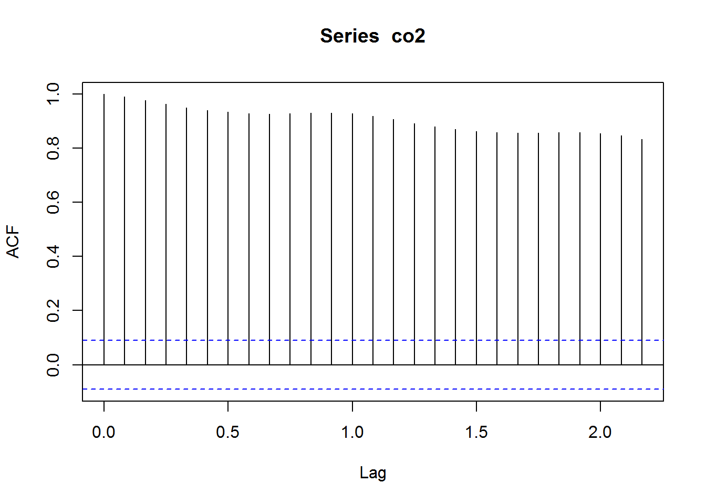
Yes, there is a trend.
If trend…
Differencing (ie. subtracting mean) or fitting a curve and subtracting the fitted values
detrend(): computes the least-squares fit of a straight line to the data and subtracts the resulting function from the data.
# subtracting yearly mean
yearlymean <- ave(co2, gl(39, 12), FUN = mean)
co2.dt <- co2 - yearlymean
# blackbox way to do it but not necessary
# co2.dt <- pracma::detrend(co2.m, tt = "constant")
# co2.dt <- ts(as.numeric(co2.dt), start = c(1959, 1), frequency = 12)
# will get the same result as aboveDetrended
plot(co2.dt)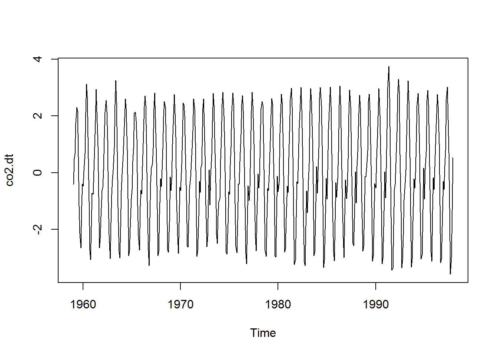
Seasonality?
Seasonal Subseries Plot
monthplot(co2.dt, ylab = "data")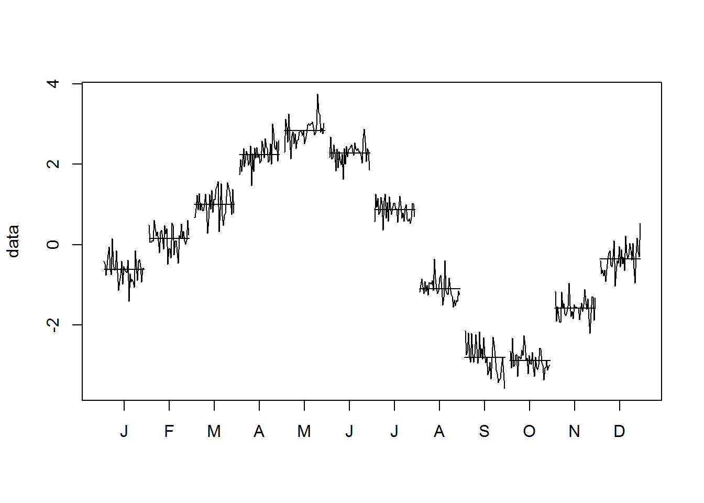
Autocorrelation Plot
acf(co2.dt, type = "correlation")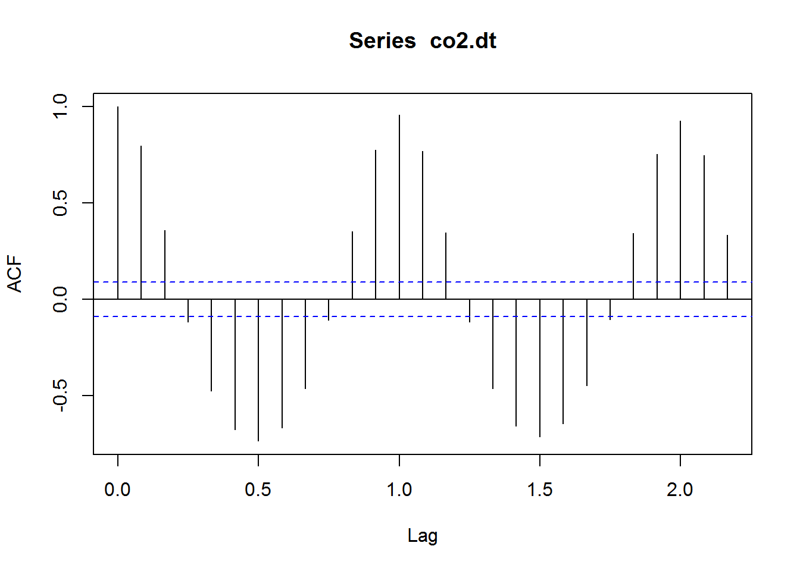
Yes, there is seasonality.
If Seasonality…
Seasonal differencing
diff(): takes timeseries (ts), applies a given lag and returns lagged differences for each value in the timeseries.
# differencing once
co2.dt.dif <- diff(co2.dt,lag = 12)
plot(co2.dt.dif)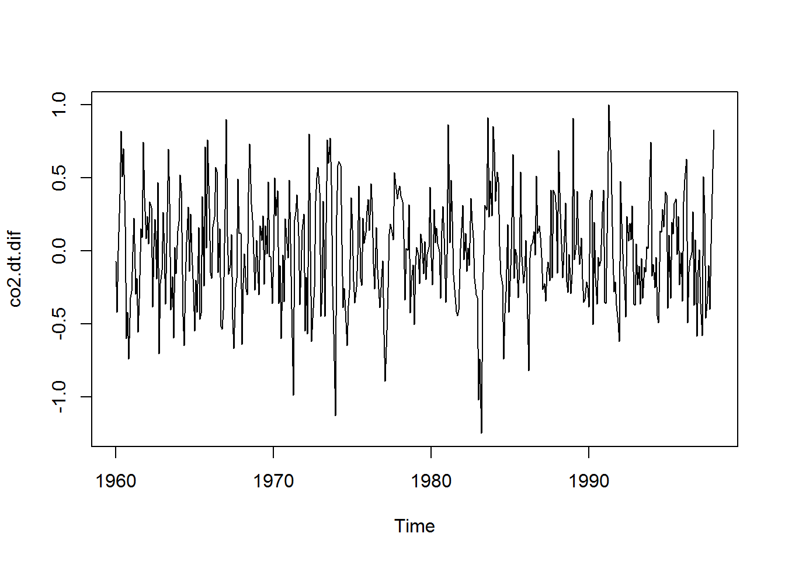
Check diagnostic plots again.
Seasonal Subseries Plot
monthplot(co2.dt.dif, ylab = "data")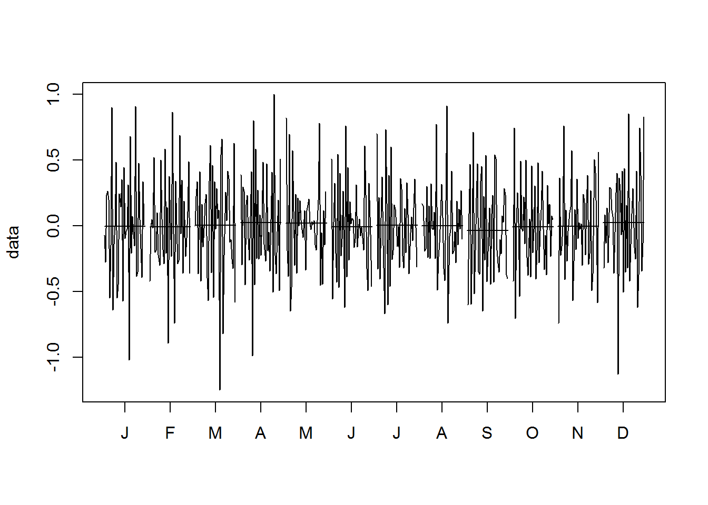
Autocorrelation Plot: Still some seasonality showing up in this plot
acf(co2.dt.dif, type = "correlation")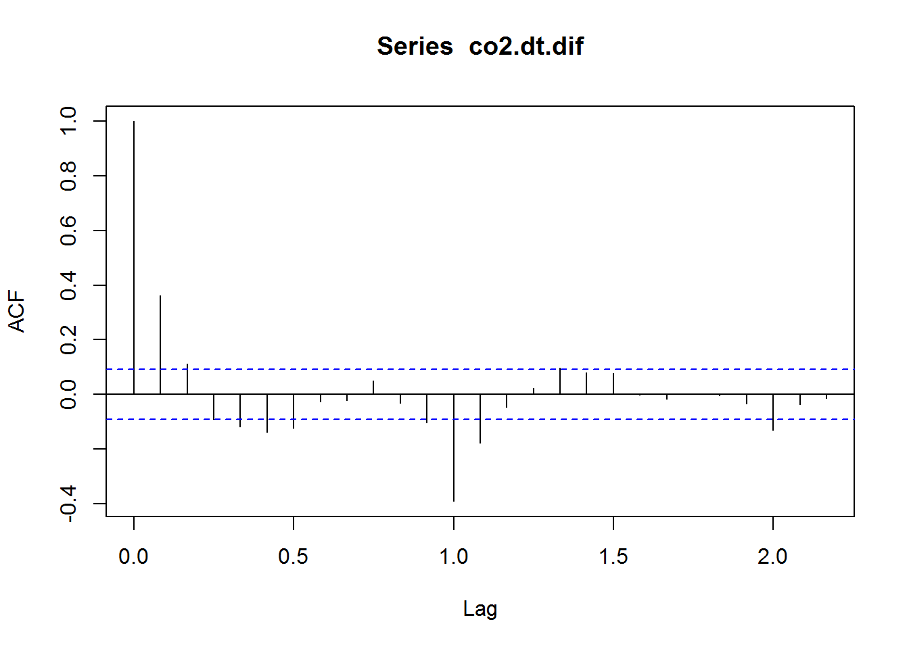
Based on the autocorrelation plot, model will need a seasonal component to address strong seasonality with differencing.
CAVEAT: Be judicious with differencing more than once, you can run into issues of over correcting.
Unequal variance?
This dataset has equal variance.
If unequal variance…
Use natural log transformation
Another option in R for diagnosing data
Seasonal Trend Decomposition using loess
Loess: a non-parametric regression method using multiple regression models, k-nearest-neighbor-based meta-model
stl(): Decomposes time series into seasonal, trend and irregular components using loess
co2.stl <- stl(co2,s.window = "periodic")
plot(co2.stl)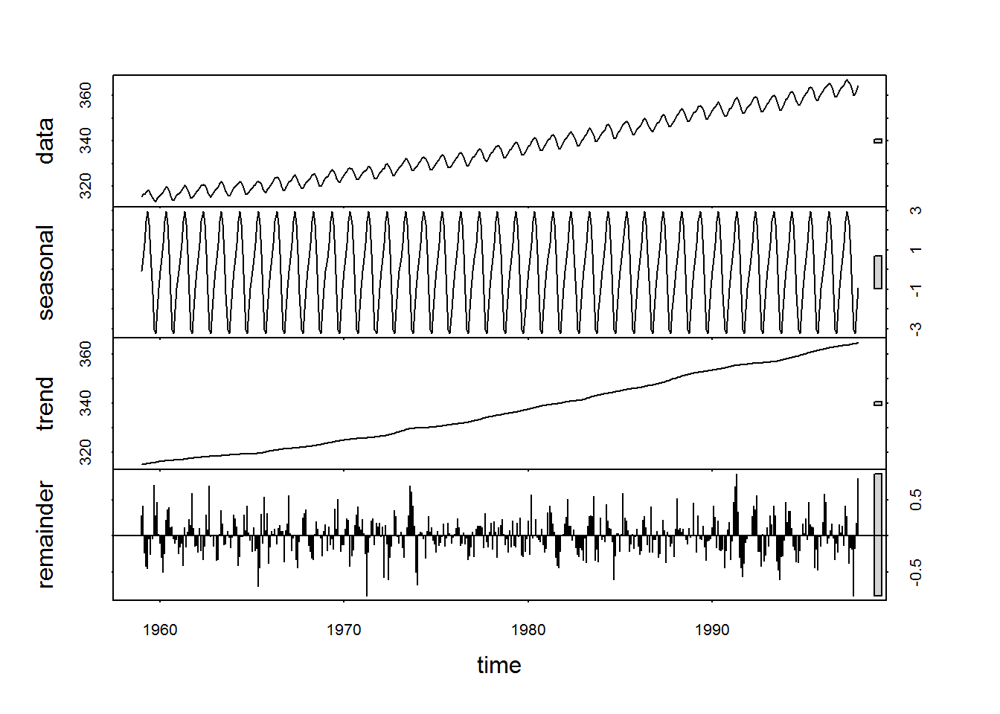
# black box?Choose an ARIMA Model
Assess the shape of the autocorrelation or partial autocorrelation plots to determine model.
Exponential decay to 0: autoregressive model Alternating + & - decay to 0: autoregressive model One or more spikes with the rest essentially at 0: moving average model Decay starts after a few lags: mixed autoregressive and moving average model All 0 or close to 0: data are random High values at fixed intervals: add seasonal autoregressive term No decay to 0: Series is not stationary
Based on the autocorrelation plot…
acf(co2.dt.dif, type = "correlation")
ARIMA model with possible seasonal autocorrelation
Syntax looks like: AR(1) with seasonal AR(12) The autoregression term has a lag of 1 because that is when the autocorrelation plot drops off, and seasonal autocorrelation has a lag of 12 because the seasonality is a 12 month cycle.
ARIMA
In base R:
arima(): fit an ARIMA model to a timeseries dataset
arima0(): same as arima() with the added ability to use the predict() function to predict values out into the future
# ARIMA(1,0,0)[12]
# without seasonality on fully differenced data
results <- arima0(co2.dt.dif, order = c(1,0,0), include.mean = FALSE)
# exclude mean because estimation of mean is 0, since mean was taken out in the detrending
# ARIMA(1,0,0)(0,1,1)[12]
# with seasonality on detrended data with seasonality
resultsseason <- arima0(co2.dt, order = c(1,0,0), seasonal = c(0,1,1), include.mean = FALSE)
# order and season = c(p,d,q) c(AR, degree of differencing, MA order)
results##
## Call:
## arima0(x = co2.dt.dif, order = c(1, 0, 0), include.mean = FALSE)
##
## Coefficients:
## ar1
## 0.3663
## s.e. 0.0438
##
## sigma^2 estimated as 0.1175: log likelihood = -158.92, aic = 321.84resultsseason##
## Call:
## arima0(x = co2.dt, order = c(1, 0, 0), seasonal = c(0, 1, 1), include.mean = FALSE)
##
## Coefficients:
## ar1 sma1
## 0.3809 -0.8609
## s.e. 0.0436 0.0020
##
## sigma^2 estimated as 0.07152: log likelihood = -53.58, aic = 113.15acf(results$residuals)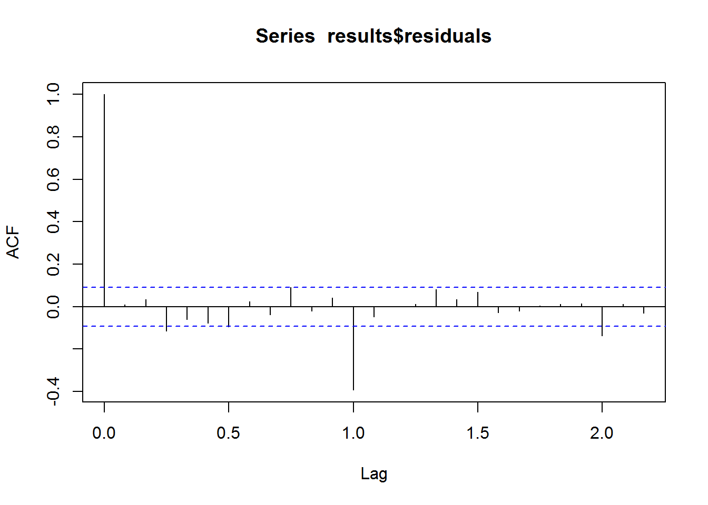
acf(resultsseason$residuals)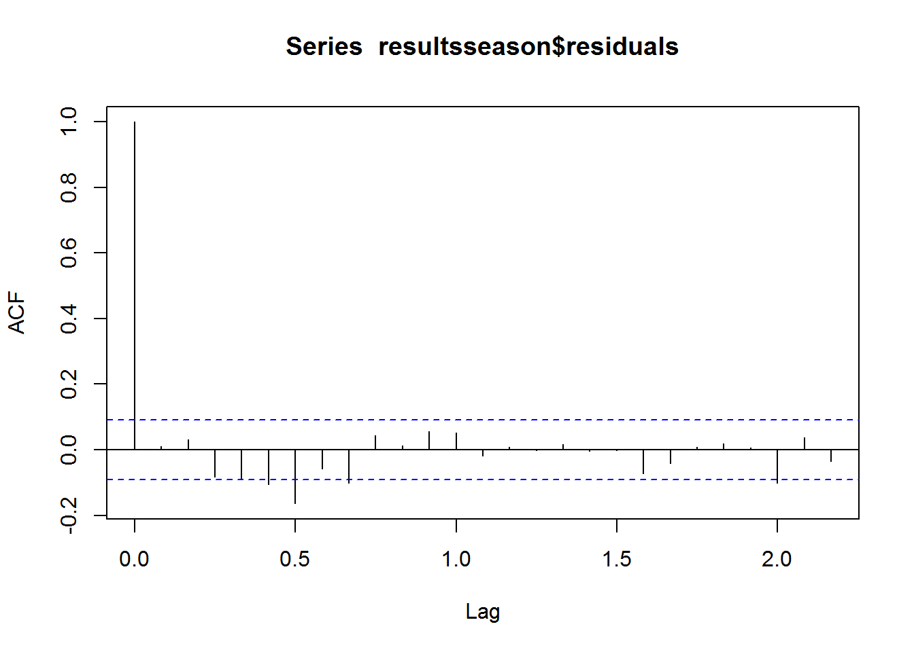
The ARIMA model with the seasonal componant does much better when comparing the AICs as we would expect.
Another option in forecast package:
auto.arima(): takes a timeseries (ts) and calculates the best arima based on the AIC, AICc and BIC.
resultsauto <- forecast::auto.arima(co2)
resultsauto## Series: co2
## ARIMA(1,1,1)(1,1,2)[12]
##
## Coefficients:
## ar1 ma1 sar1 sma1 sma2
## 0.2569 -0.5847 -0.5489 -0.2620 -0.5123
## s.e. 0.1406 0.1204 0.5879 0.5701 0.4819
##
## sigma^2 estimated as 0.08576: log likelihood=-84.39
## AIC=180.78 AICc=180.97 BIC=205.5acf(resultsauto$residuals)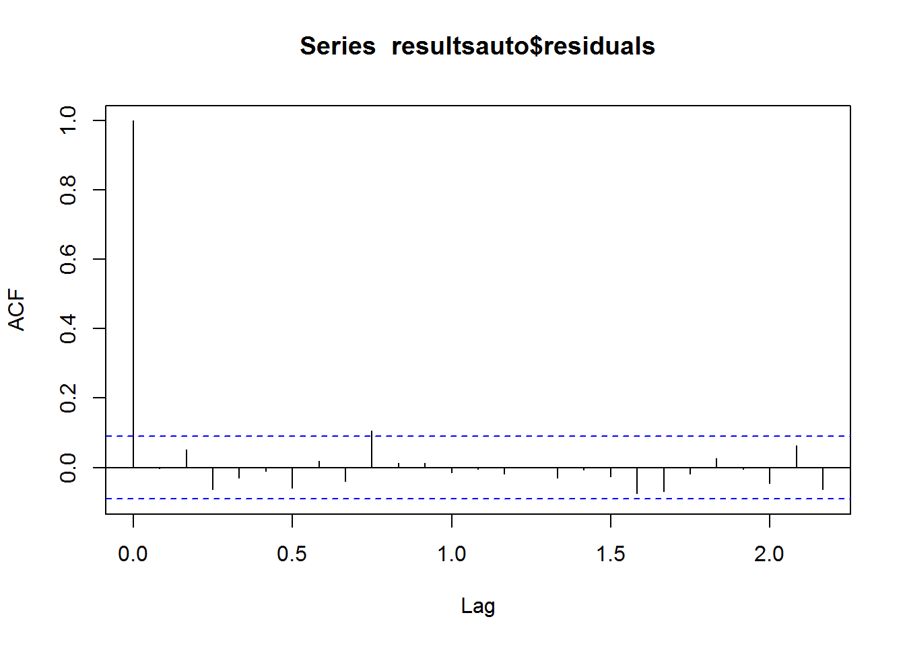
Be careful! The computer has a tendency to overfit. It is important to look at the number of terms in the equation and make sure some have not cancelled others out. In this case, the seasonal MA and the none seasonal AR introduce opposite correlations effectively canceling each other out. It is definately important to unpack the black box.
Plots for the best model from above
# plot
fitted.co2.dt <- co2.dt - resultsseason$residuals
ts.plot(co2.dt, fitted.co2.dt, col = 1:2)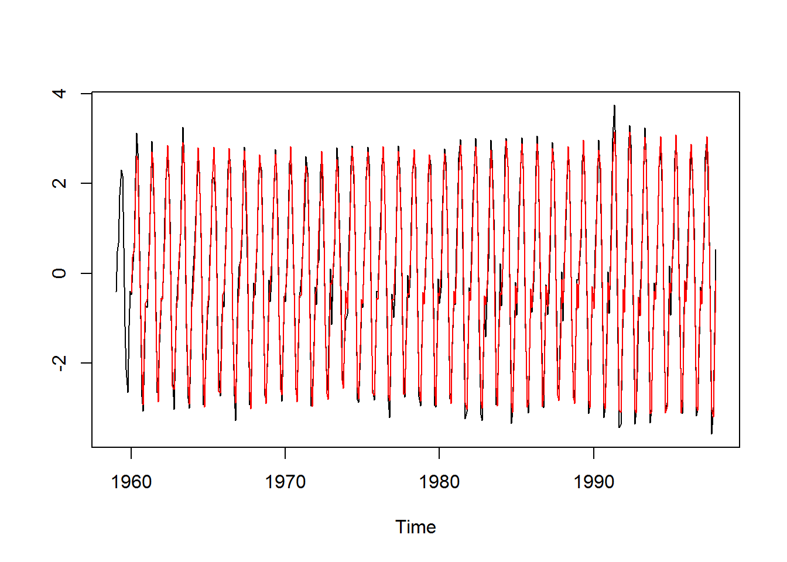
# on original data
fitted.co2 <- fitted.co2.dt + yearlymean
ts.plot(co2, fitted.co2, col = 1:2)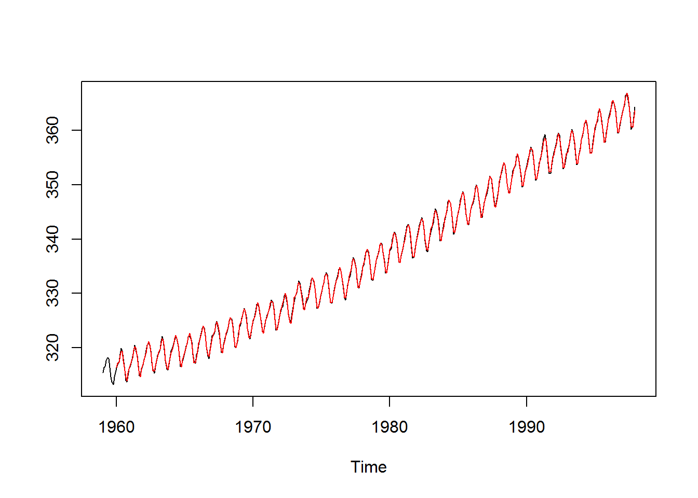
With an understanding of the process…
R will deal with trends, seasonality and unequal variance with arima0(). Make sure you know which terms to put in the model first.
final <- arima0(co2, order = c(1,1,0), seasonal = c(0,1,1))
acf(final$residuals)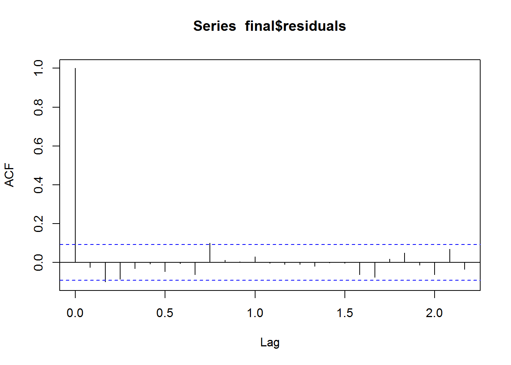
So what about predictions?
co2.fitted <- co2 - final$residuals
predict.final <- predict(final,n.ahead = 36,se.fit = FALSE)
ts.plot(co2, co2.fitted, predict.final, col = 1:3)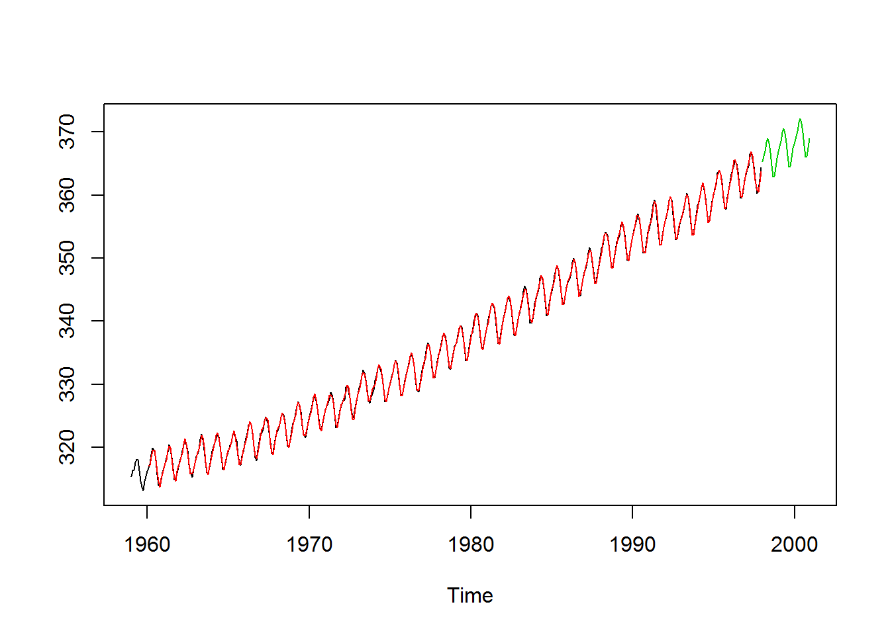
# and standard error
# from which you can get confidence intervals
predict.final.se <- predict(final,n.ahead = 36)Conclusions:
ARIMA models are tricky to build. It is easy to overfit the mode. Statistical experience definately helps.
It is important to open the black box and fully understand what the model is doing.
Diagonostics are critical, but open to interpretation.
Questions
- Take another timeseries dataset built into R. For example:
data() # lists the different r datasets
head(austres) # Numbers (in thousands) of Australian residents measured quarterly from March 1971 to March 1994. The object is of class "ts".## [1] 13067.3 13130.5 13198.4 13254.2 13303.7 13353.9Run the appropriate tests and build an ARIMA model for it. How confident are you in the ARIMA model? What are some drawbacks to using the model? What are some advantages?
- Use the ARIMA model to predict future values. Does the ARIMA make good predictions? How reasonable are your confidence intervals?